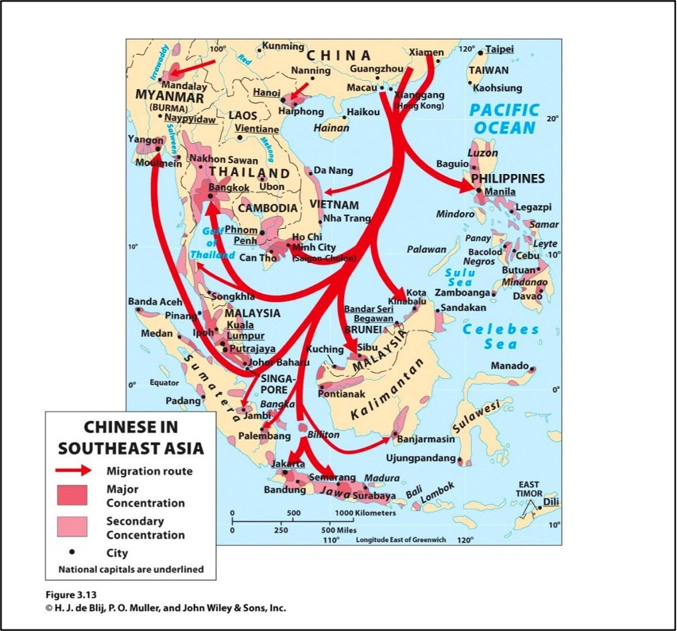
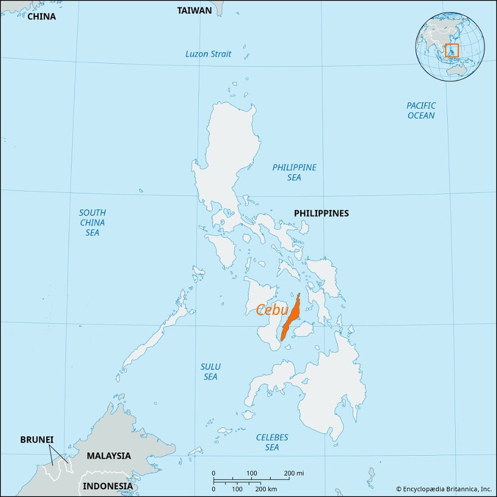
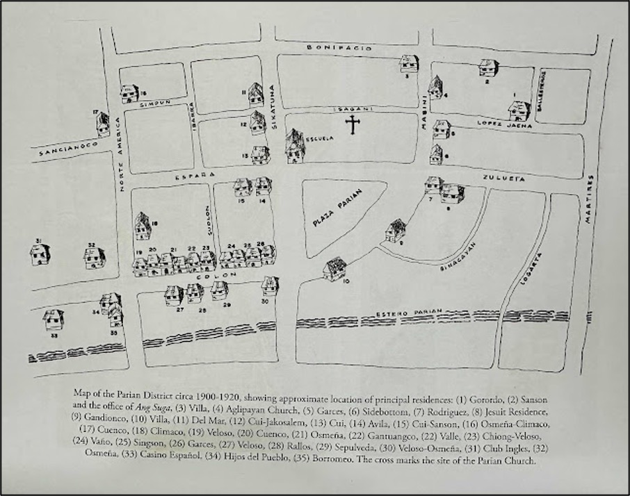
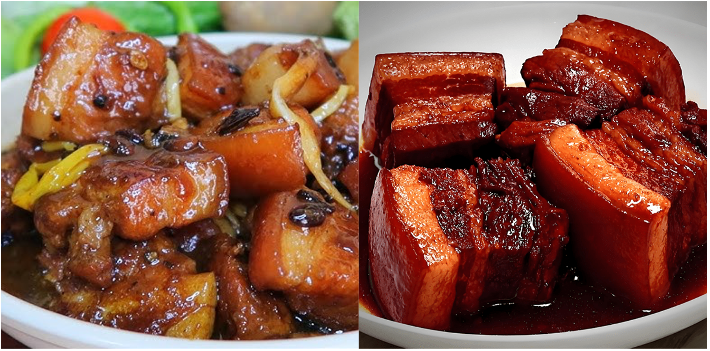
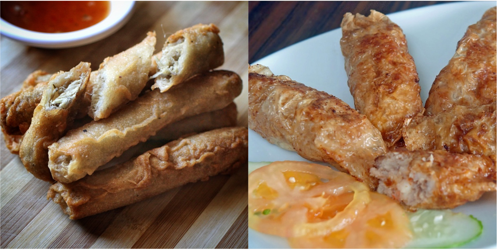
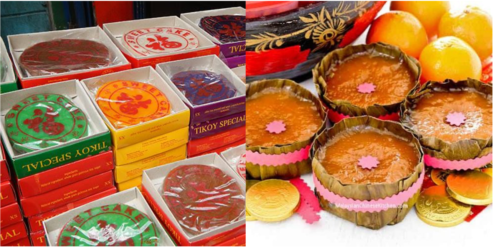
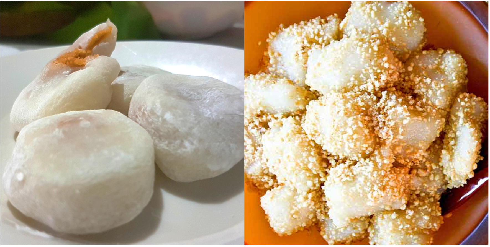

1. ABSTRACT
This paper examines the Southern Chinese (Fujian) culinary influence on Cebuano cuisine, reasoning that it represents the most sustained and structurally similar Chinese food tradition in the Philippines compared to other regional cuisines. Through qualitative case study methodology analyzing four iconic Cebuano dishes—humba, ngohiong, tikoy, and maci—this paper traces their origins to specific Fujianese preparations and demonstrates how historical trade networks, Chinese settlement, and geographic connectivity enabled deeper cultural transmission in Cebu than in other Philippine regions. Historical document analysis from Spanish colonial records and contemporary scholarship reveals that Cebu's Parian (Chinese quarter), established in 1590, created institutional conditions for culinary continuity rather than mere adaptation. The study finds that Cebuano dishes retain closer structure, such as in ingredients and resemblance, to Fujian originals than their counterparts in other Philippine regions. This paper gives further understanding of food as living cultural diplomacy and challenges Manila-centric narratives of Chinese-Filipino heritage.
The findings suggest that regional culinary variations reflect distinct historical experiences of cross-cultural exchange, with Cebu serving as a unique node of Sino-Philippine cultural continuity.
Keywords: Cebuano cuisine, Fujian food, Chinese-Filipino culinary heritage, comparative food studies
2. INTRODUCTION
The culinary scene of the Philippines reflects centuries of cultural exchanges, yet regional variations reveal uneven layers of foreign influence. While Spanish colonization and American occupation dominate a good percentage of Philippine food history, one of the most enduring signs of influence stems from pre-colonial and colonial-era interactions with Southern China—particularly Fujian Province. This influence manifests differently across the archipelago, but nowhere is it more profound than in Cebu, where dishes like humba, ngohiong, tikoy, and maci bear an incredible resemblance to their Fujianese counterparts. The question this paper seeks to answer is: How does Cebuano cuisine reflect deeper Southern Chinese (Fujian) influence compared to other Philippine regions, and what historical, geographic, and social factors account for this distinction?
This study connects directly to the course topic of 饮食 (cuisine) and regional variations, examining how food serves as a record of intercultural contact within the Philippine's rich history. By comparing known Cebuano dishes with both their Fujian origins and other Philippine regional cuisines (Tagalog, Bicol, Ilocano), this paper demonstrates that culinary practices are not merely adopted but actively re-imagined within specific historical and geographic contexts. The importance of this study lies in its challenge to Manila-centric narratives of Chinese-Filipino heritage. Contemporary scholarship and popular discourse often privilege Binondo (Manila's Chinatown) as the primary site of Chinese cultural influence, yet Cebu's culinary traditions suggest an equally vital, if distinct, pattern of cultural continuity. Understanding these regional variations enriches our comprehension of how maritime trade networks, settlement patterns, and community cohesion shaped Philippine cultural identity. Moreover, as China and the Philippines navigate contemporary diplomatic and economic relationships, recognizing historical ties embedded in everyday practices like cooking and eating offers a grounded perspective on cultural diplomacy.
This paper argues that Cebuano cuisine represents the most "Southern Chinese adjacent" food tradition in the Philippines—not through superficial borrowing, but through sustained practice, adaptation, and preservation rooted in pre-colonial trade, longstanding Chinese settlement, and geographic connectivity. By tracing specific dishes to their Fujian origins and contrasting Cebu's experience with other Philippine regions, this study illuminates how everyday cuisine embodies deep historical ties between China and the Philippines.
3. LITERATURE REVIEW
Scholarship on Chinese-Filipino culinary influence has changed from descriptive classification to complex analyses of cultural transmission, adaptation, and identity formation. This literature review blends historical, anthropological, and food studies perspectives to establish the theoretical framework for understanding Cebu's unique position within Filipino food.
History of Chinese Presence in the Philippines
Primary historical sources document continuous contact with the Chinese inside the Philippine islands well before the arrival of the Spanish. Blair and Robertson's (1903) compilation of Spanish colonial records provides crucial evidence of Chinese traders (called 'sangleys') operating in Cebu as early as the 1570s, with the establishment of the Parian de Cebu in 1590 creating an established Chinese quarter second only to Manila's Binondo in size. This historical documentation is essential for understanding the structural conditions that enabled culinary transmission.
Contemporary historian Richard T. Chu (2012) challenges Manila-centered narratives by demonstrating that Chinese presence extended throughout the archipelago, with Cebu, Iloilo, and other port cities serving as significant centers of maritime exchange. Chu argues that "In these regional centers, ethnic boundaries were fluid and cultural practices, including foodways, were actively negotiated through daily interaction, intermarriage, and commercial exchange suggesting that culinary influence was not unidirectional but emerged through sustained interaction." Teresita Ang See (2020) further said "Maritime trade networks facilitated not only the movement of goods but also the transmission of culinary knowledge, cooking techniques, and food-related cultural practices that continue to shape Philippine cuisine today."
Food as Cultural Record
Doreen Fernandez's book Palayok: Philippine Food Through Time, On Site, In the Pot (2000) established that "The Chinese contribution to Philippine cuisine is not merely a matter of introduced dishes but of fundamental techniques—stir-frying, steaming, braising—that have been absorbed into the mainstream of Filipino cooking." She further argues that "the Chinese contribution is most visible in noodle dishes and steamed buns, but in the Visayas, especially Cebu, it extends to preserved meats (humba), stuffed rolls (ngohiong), and festive sweets (tikoy), forms that are rarely found in purely indigenous or Spanish-influenced dishes. Her work provides the methodological foundation for tracing specific dishes to their cultural origins while acknowledging processes of localization.
Jennifer Lantrip's (2017) thesis, The Chinese Cultural Influence on Filipino Cuisine, offers a systematic analysis of how Chinese food were "not merely adopted but actively reinterpreted within local Philippine contexts, particularly in port cities like Cebu where sustained contact occurred." Lantrip's work is particularly valuable for its comparative approach, documenting how similar Chinese dishes underwent different transformations in different Philippine regions based on local ingredients, existing culinary traditions, and intensity of Chinese contact.
Contemporary Perspectives on Filipino-Chinese Culinary Heritage
A recent growth in cultural advocacy have emphasized the importance of documenting and preserving Filipino-Chinese culinary heritage. John Sherwin Felix, the founder of Lokalpedia, encourages the documentation of regional food heritage, arguing that "understanding the Chinese roots of dishes like humba and ngohiong is not about diminishing their Filipino-ness but also about honoring the complex, layered history that makes them uniquely Filipino."
Digital media and community platforms have also contributed to public understanding of Chinese-Filipino food culture. CHiNOY TV's (2021) documentation of tikoy origins traces the sweet rice cake directly to Hokkien 'ti-koe', itself a variant of Chinese nian-gao consumed during Lunar New Year celebrations. Contemporary Chinoy (a term referencing Chinese-Filipino people) voices like Thunderson Tan (@filchi_thunder) use social media to affirm that Cebu's food culture preserves Fujianese techniques "with remarkable fidelity," suggesting that culinary continuity serves as a form of cultural memory.
Local food scholars recognize that Chinese influence varied significantly across Philippine regions. Recent reporting in Cebu Daily News (2026) highlights how Cebu's Chinese merchant communities maintained tight-knit networks well into the American period, creating conditions for intergenerational transmission of culinary knowledge.
Gaps in Existing Literature
While existing studies establishes the presence of Chinese influence in Philippine cuisine, several gaps remain. First, most studies focus on Manila or treat the Philippines as a monolithic entity, underexploring regional variations. Second, while historical documents confirm Chinese presence in Cebu, few studies actually connect specific Cebuano dishes to their Fujian counterparts through a detailed culinary analysis. Third, modern Chinoy voices are often underrepresented in academic literature, despite their value as carriers of cultural memory. This study addresses these gaps by combining historical document analysis, dish-by-dish comparison, and contemporary cultural advocacy to demonstrate Cebu's unique position within Philippine cuisine.
4. METHODOLOGY
This study employs a multi-method qualitative approach combining case study analysis, comparative regional analysis, and historical document analysis to examine the depth and nature of Southern Chinese (Fujian) culinary influence in Cebuano cuisine.
Qualitative Case Study: Four Iconic Dishes
The research focuses on four emblematic Cebuano dishes—humba, ngohiong, tikoy, and maci—selected based on three criteria: (1) documented or strongly suggested Fujian origins, (2) widespread consumption and cultural significance in Cebu, and (3) clear parallels to Fujianese preparations. For each dish, the study analyzes:
- Ingredients: Comparison of core components (proteins, seasonings, cooking fats)
- Techniques: Cooking methods (braising, steaming, frying, fermenting)
- Flavor profiles: Balance of sweet, salty, sour, umami
- Cultural contexts: Occasions for consumption, symbolic meanings, transmission patterns
Data for this analysis derives from culinary reference works (declared in the References section), contemporary reporting and academic studies. Where possible, dishes are traced to specific Fujianese originals—for example, humba to Hokkien hong-bah (red-braised pork belly) and tikoy to ti-koe (sweet rice cake).
Comparative Regional Analysis
To establish Cebu's distinctiveness, the study compares Cebuano culinary patterns with those of three other Philippine regions: Tagalog (Luzon), Bicol (Southern Luzon), and Ilocano (Northern Luzon). This comparison examines:
- Presence/absence of Chinese-derived dishes: Frequency and variety of foods with clear Chinese origins
- Degree of adaptation: How closely regional dishes resemble their Chinese counterparts versus how thoroughly they have been localized
- Historical Chinese settlement patterns: Intensity and duration of Chinese presence in each region
This comparative framework draws on Fernandez's (2000) regional food surveys, Lantrip's (2017) analysis of differential Chinese influence, and historical accounts of Chinese settlement patterns (Chu 2012; Blair & Robertson 1903). The analysis reveals that regions like Bicol, with strong indigenous coconut-based culinary traditions and minimal Chinese settlement, show markedly less Chinese influence than Cebu.
Historical Document Analysis
To contextualize culinary patterns within broader historical processes, the study analyzes primary and secondary historical sources documenting Chinese presence in Cebu from the pre-colonial period through the Spanish era. Primary sources include Spanish colonial records: Blair and Robertson's (1903) compilation of documents mentioning Chinese traders (sangleys) in Cebu, the establishment of the Parian de Cebu in 1590, and regulations governing Chinese residents. Secondary sources include historical scholarship: Chu's (2012) analysis of Chinese and mestizo communities, See's (2020) overview of Philippines-China relations, and Cullinane's (2020) synthesis of Chinese presence in Cebu during the Spanish era, as well as contemporary reporting on Cebu's Chinese merchant communities (Cebu Daily News 2026). This historical analysis establishes the structural conditions such as institutionalized Chinese quarters, sustained trade networks, and community cohesion that most likely enabled culinary transmission and preservation.
Paper Limitations
This study acknowledges several limitations. First, reliance on written sources may do not entirely represent oral transmission and informal culinary knowledge. Second, Wikipedia entries, while useful for preliminary information, are not peer-reviewed sources. Third, the study focuses on four dishes, which may not represent the full spectrum of Chinese influence in Cebuano cuisine. Future research incorporating oral histories, recipe archives, and ingredient traceability studies would strengthen these findings.
5. TRACING FUJIAN FLAVORS: HISTORICAL CONNECTIONS, CULINARY PARALLELS, AND REGIONAL DISTINCTIONS IN CEBUANO CUISINE
I. Historical Ties: Fujian–Cebu Maritime Exchange
Cebu's central geographic position and natural harbor made it a strategic port city, ensuring regular visits from Fujianese traders throughout the Spanish period. These trading vessels brought not only goods but also fresh migrants, cultural updates, and crucially, food ingredients essential to Fujianese cuisine—soy sauce, dried mushrooms, preserved vegetables, and spices (Blair & Robertson, vol. 5).

Figure 1: Historical Maritime Trade Routes connecting Fujian Province, China to Cebu, Philippines

Figure 2: Cebu's convenient central location maintained a strong trade relationship with Fujian

Figure 3: The Parian district, established by the Spanish in 1590, to function as a Chinese district for Fujianese traders, enabled the preservation of Chinese culinary traditions.
The concentration of Fujianese merchants in Cebu's Parian district meant traditional Fujianese cooking techniques and ingredient preferences could persist with minimal external interference. As Chu (2012) notes, "ethnic boundaries were fluid and cultural practices—including foodways—were actively negotiated" in these enclaves. This institutional and geographic context created uniquely favorable conditions for culinary continuity, distinguishing Cebu from regions with more dispersed or transient Chinese presence.
II. Culinary Parallels: Dish-by-Dish Comparison with Fujian
Four iconic Cebuano dishes demonstrate structural, ingredient-based, and symbolic similarities to their Fujianese originals, providing concrete evidence of culinary continuity.
Humba vs. Hong Bah
Cebuano humba derives its name from the Hokkien hong-bah (烘肉), meaning "red-cooked meat". Both dishes feature pork belly slow-braised with soy sauce, fermented black beans, star anise, and sugar until tender and deeply flavored. The cooking technique employs the Chinese method of hong shao (red braising), searing meat, then simmering it slowly in soy sauce, rice wine, sugar, and aromatic spices. This technique, uncommon in indigenous Philippine cooking, was preserved in Cebuano kitchens with remarkable resemblance.

Figure 4: Cebuano humba (left) Fujian braised pork hong-bah (right) and and share similar dark color, pork belly cuts, and sweet-savory profiles
Ngohiong vs. Ngo Hiang
Ngohiong derives directly from the Hokkien ngoh hiang (五香), meaning "five spices". Both Cebuano and Fujianese versions wrap seasoned minced pork in bean curd sheets or thin wrappers, then deep-fry until crispy, serving with sweet-sour dipping sauce. Contemporary reporting notes that "ngohiong in Cebu is not merely a street food snack but a living link to the city's Hokkien heritage, with families like the Uy/Huang () clan preserving recipes brought from Fujian generations ago" (Sitchon 2021). This intergenerational transmission within specific families demonstrates household-level preservation of Fujianese culinary knowledge.

Figure 5: Cebuano ngohiong (left) reflects Fujianese five-spice roll ngohiang (right)
Tikoy vs. Ti-Koe
Chinese-Filipino tikoy derives from the Hokkien ti-koe (甜粿), a variant of Mandarin nian gao (年糕), meaning "year cake". Both are made from glutinous rice flour and brown sugar, steamed to achieve a sticky, dense texture. The symbolic meaning is identical: the sticky consistency represents family cohesion and prosperity. As documented by CHiNOY TV (2021), "tikoy is a direct adaptation of Chinese nian gao, traditionally consumed during Lunar New Year celebrations as a symbol of prosperity and family cohesion". The persistence of celebrating Chinese New Year in Cebu demonstrates maintenance of Southern Chinese rituals alongside culinary practices.

Figure 6: Filipino tikoy (left) and Fujian ti-koe (right) share ingredients, texture, and Lunar New Year symbolic meanings
Maci vs. Muah Chee
Maci (or machi) parallels Southern Fujianese muah chee and Chinese mochi-like confectionery of glutinous rice balls filled with sweetened ground peanuts or sesame, coated in ground roasted peanuts mixed with sugar. Lantrip (2017) notes that "Chinese foodways were not merely adopted but actively reinterpreted within local Philippine contexts, particularly in port cities like Cebu where sustained contact occurred over multiple generations" (p. 34). Maci exemplifies this process: maintaining the fundamental structure of Chinese sweet rice balls while sometimes incorporating local ingredients like muscovado sugar.

Figure 7: Cebuano Maci (left) and Fujian Muah Chee (right) share in the same sweetened ground peanuts and sugar to serve as a confectionery dessert.
These four dishes demonstrate that Cebuano cuisine preserves not isolated Chinese influences but a coherent culinary system encompassing main dishes, street food, festive foods, and desserts.
III. Contrast: Why Other Regions Show Weaker Chinese Influence
Comparative analysis reveals that Chinese influence varies significantly across the Philippines, with Cebu demonstrating markedly deeper Fujianese elements than Tagalog, Bicolano, or Ilocano cuisines.
Tagalog Cuisine: Selective Adoption
Tagalog cuisine shows Chinese influence in noodle dishes (pancit), street foods (siomai, siopao), and lumpia. However, Fernandez (2000) observes that "while Tagalog cuisine shows Chinese influence primarily in noodle dishes and street food, Cebuano cuisine demonstrates Chinese impact across multiple categories—main dishes, snacks, and festive foods". Tagalog versions undergo more substantial localization, reflecting Manila's stronger Spanish colonial influence and more rapid cultural mixing, leading to creolized food forms rather than Cebu's structural preservation.
Bicolano Cuisine: Indigenous Dominance
Bicolano cuisine demonstrates minimal Chinese influence, centering instead on coconut milk (gata), chili peppers, and dishes like Bicol Express and laing. Lantrip (2017) explains: "Regions like Bicol, with strong indigenous culinary traditions centered on coconut milk and chili peppers, and limited Chinese settlement, show markedly less Chinese influence than port cities like Cebu" Bicol's geographic distance from major trade routes meant minimal Chinese settlement and limited culinary transmission.
Ilocano Cuisine: Spanish and Indigenous Synthesis
Ilocano cuisine similarly shows weaker Chinese influence, reflecting indigenous practices and Spanish colonial introduction instead. Signature dishes like pinakbet, bagnet, and longganisa demonstrate Spanish curing techniques rather than Chinese braising or steaming methods. Cullinane (2020) states that "Chinese presence was concentrated in port cities with established trade networks—Manila, Cebu, Iloilo—while inland and northern regions experienced minimal direct Chinese contact". Ilocos was not a primary destination for Fujianese traders.
IV. Cultural Synthesis: Localization Without Erasure
The Cebuano-Fujianese culinary relationship demonstrates "localization without erasure", an adaptation to local culture while maintaining essential structural and symbolic integrity. At the ingredient level, Cebuano cooks sometimes substitute local products using local vinegar varieties or muscovado sugar, yet these substitutions rarely alter the fundamental character of the dish. Humba remains recognizable as red-braised pork; tikoy maintains its sticky, sweet character.
At the technique level, Chinese cooking methods such as braising, steaming, and stir-frying have been fully absorbed into Cebuano culinary practice. As Fernandez (2000) notes, "The Chinese contribution to Philippine cuisine is not merely a matter of introduced dishes but of fundamental techniques that have been absorbed into the mainstream of Filipino cooking"
Most significantly, at the cultural meaning level, Chinese-derived dishes have been fully integrated into Cebuano identity while retaining connections to their origins. Tikoy is simultaneously a Filipino Lunar New Year tradition and a recognition of Chinese heritage.
Figure 8: Mechanism of culinary transmission from Fujian to Cebu
Contemporary Chinoy voices like Thunderson Tan (@filchi_thunder) affirm that Cebu's food culture preserves Fujianese techniques "with remarkable fidelity," suggesting culinary continuity serves as cultural memory
This active maintenance demonstrates that localization without erasure is an ongoing practice, not merely a historical process.
6. CONCLUSION
This comparative study has demonstrated that Cebuano cuisine represents the most "Southern Chinese adjacent" food tradition in the Philippines, exhibiting deeper structural, ingredient-based, and symbolic connections to Fujianese culinary practices than other Philippine regional cuisines. Through analysis of four iconic dishes such as humba, ngohiong, tikoy, and maci, this paper has traced direct lineages to specific Fujian preparations, revealing patterns of cultural continuity rather than superficial borrowing.
The historical evidence confirms that Cebu's unique position stems from concrete structural factors: pre-colonial maritime trade networks connecting Fujian and Cebu, the institutionalization of Chinese presence through the Parian de Cebu established in 1590, and sustained community cohesion that enabled intergenerational transmission of culinary knowledge.
The comparative regional analysis further illuminates Cebu's distinctiveness. While Tagalog cuisine shows Chinese influence primarily in noodle dishes and street food, and Bicol and Ilocano cuisines retain minimal Chinese elements due to different settlement patterns and stronger indigenous or Spanish influences, Cebuano cuisine demonstrates Chinese impact across multiple categories such as main dishes, snacks, and festive foods. This width of influence reflects the depth and duration of Chinese-Cebuano interaction.
Food as Living Cultural Diplomacy
Beyond its historical significance, this research underscores the contemporary relevance of culinary heritage as a form of cultural diplomacy. In an era of complex Philippines-China relations, recognizing the deep historical ties embedded in everyday practices like cooking and eating offers a grounded, human-scale perspective on bilateral connections. As Felix (2023) argues, acknowledging the Chinese roots of dishes like humba and ngohiong does not diminish their Filipino-ness but rather honors the complex, layered history that makes them uniquely Filipino. Cebu's culinary heritage thus serves as a living archive of peaceful cultural synthesis, demonstrating how cross-cultural exchange can produce enduring, beloved traditions.
Directions for Future Research
This study suggests several promising directions for future research. First, oral history collection from Cebuano elders and Chinoy community members could capture intergenerational transmission patterns and family recipes not documented in written sources. Second, ingredient traceability studies employing DNA analysis or isotopic testing could scientifically verify the origins of key ingredients like soy sauce varieties and spice blends. Third, comprehensive recipe archives comparing historical Cebuano cookbooks with Fujian culinary texts would provide systematic evidence of technique and ingredient transmission. Fourth, expansion to other Philippine regions with significant Chinese heritage—such as Iloilo, Bacolod, or Davao—would create a more complete map of regional variations in Chinese culinary influence.
Finally, this paper invites broader reflection on how food serves as a vehicle for cultural memory and identity formation. In Cebu, every bite of humba, every ngohiong, every slice of tikoy during Lunar New Year constitutes an act of cultural remembrance and a tangible connection to centuries of exchange between Fujian and the Visayas. As globalization connects food cultures worldwide, documenting and preserving these distinctive regional traditions becomes not merely an academic exercise but an act of cultural stewardship.
REFERENCES
- Blair, Emma Helen, and James Alexander Robertson, editors. The Philippine Islands, 1493–1898. Vol. 5, Arthur H. Clark Company, 1903. Project Gutenberg, https://www.gutenberg.org/files/42884/42884-h/42884-h.htm
- Chu, Richard T. "The 'Chinese' and the 'Mestizos' of the Philippines: Towards a New Interpretation." Philippine Studies: Historical and Ethnographic Viewpoints, vol. 50, no. 3, 2012, pp. 299–328. Ateneo de Manila University, archium.ateneo.edu/phstudies/vol50/iss3/2/
- Fernandez, Doreen G. Palayok: Philippine Food Through Time, On Site, In the Pot. Bookmark, 2000.
- Felix, John Sherwin. "Championing Filipino Food Heritage Through Lokalpedia." Adobo Magazine, 31 Aug. 2023, www.adobomagazine.com/arts-culture/lokalpedia-founder-john-sherwin-felix-on-spotlighting-filipino-food-heritage-one-ingredient-at-a-time/.
- "Ngohiong." Wikipedia, Wikimedia Foundation, en.wikipedia.org/wiki/Ngohiong. Accessed 21 May 2026.
- Sitchon, John. "Ngohiong: A Cebuano Original." Rappler, 7 Feb. 2021, www.rappler.com/life-and-style/food-drinks/cebuano-original-ngohiong/.
- Cullinane, Michael. "The Chinese of Cebu in the Spanish Era: An Overview." Philippine Quarterly of Culture and Society, vol. 48, no. 3, 2020, pp. 176-228. University of San Carlos. http://www.jstor.org/stable/27230001 Accessed 21 May 2026.
- See, Teresita Ang. "Historical and Cultural Foundations of Philippines-China Relations." SSDR, vol. 1, no. 1, 2020, publishing.pup.edu.ph/ojs/index.php/SSDR/article/download/161/119/414.
- "Humba." Wikipedia, Wikimedia Foundation, en.wikipedia.org/wiki/Humba. Accessed 21 May 2026.
- Lantrip, Jennifer. The Chinese Cultural Influence on Filipino Cuisine. 2017. University of San Francisco, repository.usfca.edu/context/thes/article/1334/viewcontent/The_Chinese_Cultural_Influence_on_Filipino_Cuisine.pdf.
- "Nian gao." Wikipedia, Wikimedia Foundation, en.wikipedia.org/wiki/Nian_gao. Accessed 21 May 2026
- "Significance and Origins of Tikoy." CHiNOY TV, 1 Feb. 2021, www.chinoy.tv/significance-and-origins-of-tikoy/.
- Tan, Thunderson. @filchi_thunder. Instagram, www.instagram.com/filchi_thunder/. Accessed 21 May 2026.
- "Trade, Grit, and Growth: Lessons from Cebu's Chinese Merchants." Cebu Daily News, 17 Feb. 2026, cebudailynews.inquirer.net/697788/trade-grit-and-growth-lessons-from-cebus-chinese-merchants.